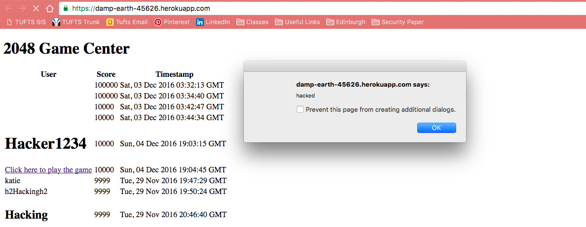

The product in question can be found at
https://damp-earth-45626.herokuapp.com/The site acts as a Game Center for the game 2048. When a player completes a game of 2048, their score, name, and final grid are sent to the Game Center, which sorts all of the scores into a comprehensive list. The application also has endpoints to add a new entry to the scores list, as well as retrieve the scores for a particular username. This report serves to outline any security flaws in the application in order to ensure that users information is securely handled by the Game Center and that the application is not subject to being taken down or altered by attackers. Suggestions for improvement will be given for each vulnerability found, and it is reccomended that the suggestions are adopted in the next release of the Game Center to achieve a secure site.
All of the vulnerabilities listed below were found and exploited during testing using curl commands. In addition, a static scan of the application using Veracode was executed, however the scan results did not reveal any additional vulnerabilities that were not already known. The scan was useful for locating vulnerabilities in the code however, and by reading through the source code and testing different curl commands to the /submit.json endpoint, the vulnerabilities were found.
The issues found all have to do with attackers inserting false data into the application by constructing fake requests and sending them to the page from the outside rather than from within the 2048 game, as intended. An attacker can send malicious data to the site, data that includes scripts or commands to run or code that affects the styling of the page. Becuase all requst input, from the game and external sources, is treated the same and not examined for possible attack indicators, any malicous code will be executed when users visit the page. Effects can range from small annoyances to users, like alerts, to style changes, to malicious links that lead unsuspecting users to unsafe areas. A full breakdown of the risks, their locations, and their fixes can be found below.
Location: index.js line 48
The homepage for the Game Center is subject to Cross Site Scripting (XSS) attacks from malicious users via POST requests to the /submit.json endpoint. Currently the page parses data sent to /submit.json and stores the raw input directly into the database, and then directly on the page. By not scrubbing the input of special characters, this page become vulnerable to XSS, where an attacker could insert javascript or other malicious content into the page. Possible affects range from simple annoyances to users, such as alerts and popups, to bringing the page down entirely with a redirect or other similar action. Therefore the severity of this vulnerability is high.
This vulnerability was found by using curl to submit data to /submit.json. Javascript code can be sent in via the "username" parameter, as the content is directly displayed on the page and therefore carried out by the browser upon rendering the page. Such an example of a command is
curl --data "username=<script>document.body.style.background='#f3f3f3 url('http://www.disneypicture.net/data/media/209/kermit_the_frog.jpg') no-repeat' </script>&score=10000&grid={}" https://damp-earth-45626.herokuapp.com/submit.json
When the browser displays the username provided it executes the script and changes the background of the page. Similarly, the username can be set to<script>alert('hacked')</script>
and an alert will appear when that username is displayed.To fix this issue, user input from POST requests should not be trusted at face value. Any special characters indicating an XSS attempt is in progress should be removed with the following code:
receivedUsername = receivedUsername.replace(/[^ \w\s]/gi, '');
Location: index.js line 48
Similarly to XSS as described avove, the site is also vulnerable to HTML injection. Through HTML injection, an attacker can inject arbitrary HTML code into the page and change the formatting of the page as desired. By adding html tags into the username field of a POST request to the applicaiton's submit.json endpoint, the attackers HTML code will be rendered by the browser when the scores table is displayed. An example of such an attack using curl would be
curl --data "username=<h1>Hacker1234</h1>&score=10000&grid={}" https://damp-earth-45626.herokuapp.com/submit.json
When the Hacker1234 username is displayed the browser will attach h1 styling to Hacker 1234, overriding the styling assigned to the usernmaes in the table. The fix for this issue is the same as the fix for the XSS vulnerability, which is remove special characters from the input before displaying it on the pgae. In general, user input should never be trusted and displayed or used in the application without being scrubbed of spcial characters that may indicate an attack attempt is in progress.Below is an image of the site after XSS and HTML injection have been applied. The popup alert is an example of XSS and the inconcsistent styling is from HTMl Injection.
Location: index.html
The Game Center is also vulnerable to Cross Site Request Forgery attacks in which an attacker can trick an authenticated user in the site to execute malicious acions against the site. An example would be to put a link in the page that when the user clicks, executes code that could take down the application or affects the experience. Such a link could be the following, executed with a curl request:
curl --data "username=<a href="https://www.youtube.com/watch?v=0vxCFIGCqnI"> Click here to claim your prize</a>&score=10000&grid={}" https://damp-earth-45626.herokuapp.com/submit.json
The above image shows an example of CSRF, in the link that reads "Click here to play the game". The link appears to be a part of the site but in fact links to an external location. This link could be to a malicious site that looks like the 2048 game but in fact does something more malicious while the user is playing. This would become a very serious problem if there were authentication involved, such as login credentials or other information that could be stolen via the external link.
Another common vulnerability, SQL Injection, is actually not a risk for this application because of the way the site accesses the database. A common strategy for retrieving the scores for a particular user would be to use the username field in the request body to /scores.json as a parameter when querying the MongoDB database. However, the applicaiton as it is written first queries the database for ALL records, and then manually checks each record to determine if the usernames match. This method therefore prevents an attacker from inserting SQL commands into the username field that will then be executed. While this is good that SQL Injection is prevented, this linear search method of querying the database is not ideal, especially if the database gets very large. Therfore, the reccomendation is to restructure database querying so that it does use the username field of the request directly in the SQL command, but only after scrubbing it of possible SQL Injection attack code. In general, all of the vulnerabilities above can be prevented by scrubbing user input of special characters or commands before it is used for anything.